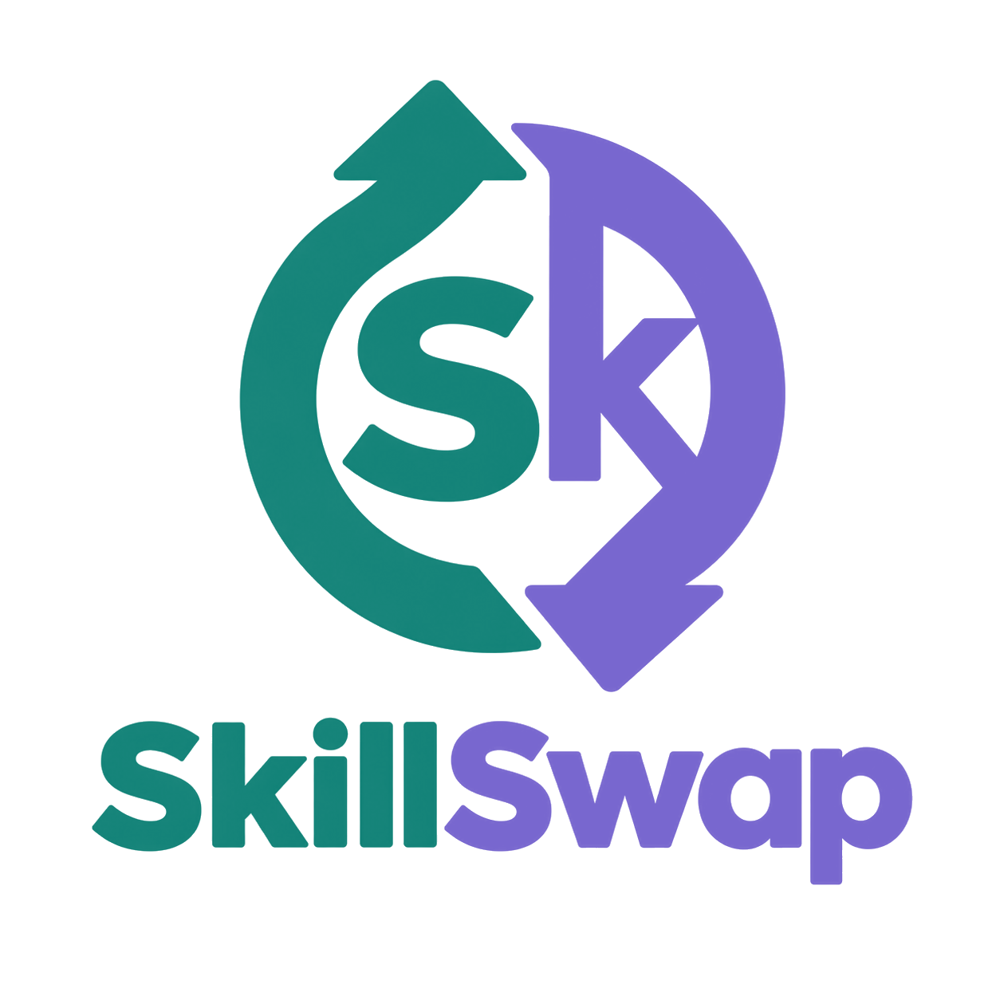

Bright, welcoming, and easy to trust.
The interface helps Members teach and learn from one account. Teal anchors the experience; brighter accents distinguish skills, progress, and session states without relying on color alone.

Original logo · app paletteColor roles
Use color to guide attention and make states easier to recognize.
Clear, friendly hierarchy
Manrope for expressive headings; DM Sans for useful, readable interface text.
A little knowledge goes a long way. What will you learn today?
Tell people what you can teach, what you want to learn, and when you’re available.
LABEL / SUPPORTING TEXT · 12px minimum for essential instructionsComfortable rhythm
Responsive layouts keep the next action visible on narrow and wide screens.
Product building blocks
Examples use the same Member model for both teaching and learning.
Can teach Figma; wants to learn photography.
Earn by teaching. Spend to learn.
Ask Maya about a 60-minute Figma session.
States are visible and named
Focus, status, and errors combine shape, text, and color.
Core screen map
Member and Admin are the only account types.
Sign up → verify email → profile → skills to teach and learn → availability and privacy settings.
Overview → discover and search → match reason → profile → request → private conversation.
Agree time → session details and meeting link → complete → review → credit history.
Profile and listings → privacy and visibility → saved people and skills → notification preferences.
Admin home → report or dispute queue → evidence and context → reasoned action → audit record.